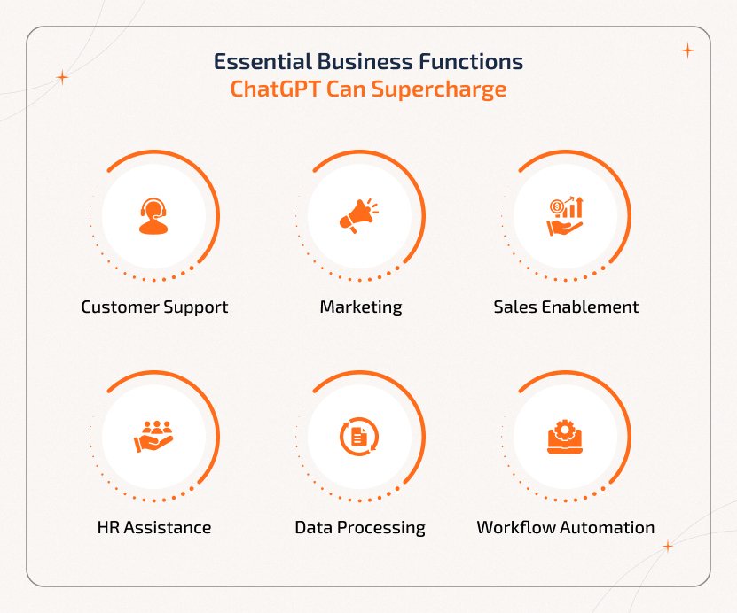
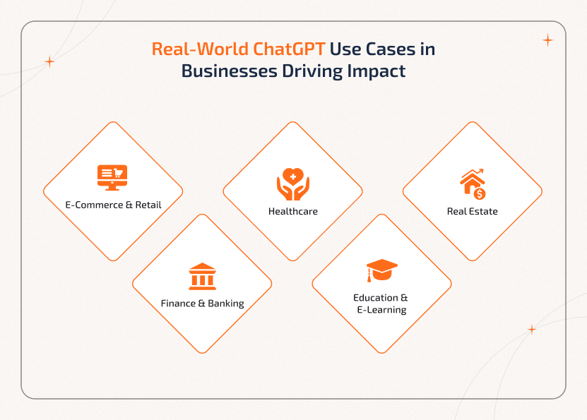
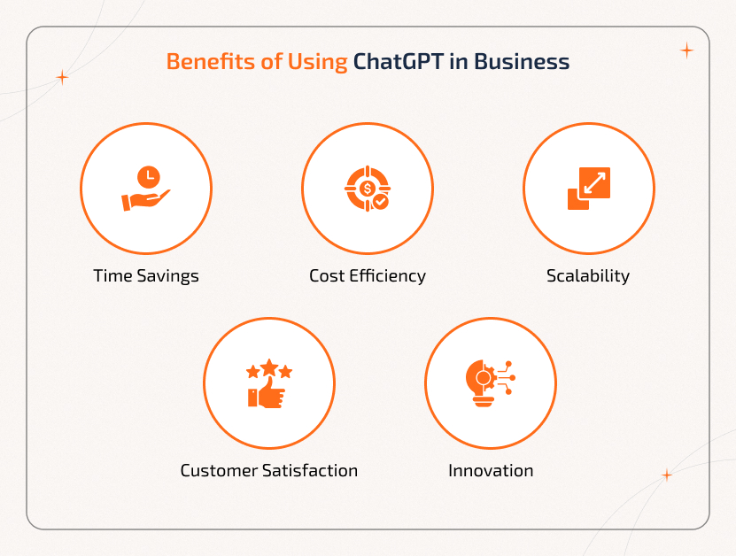
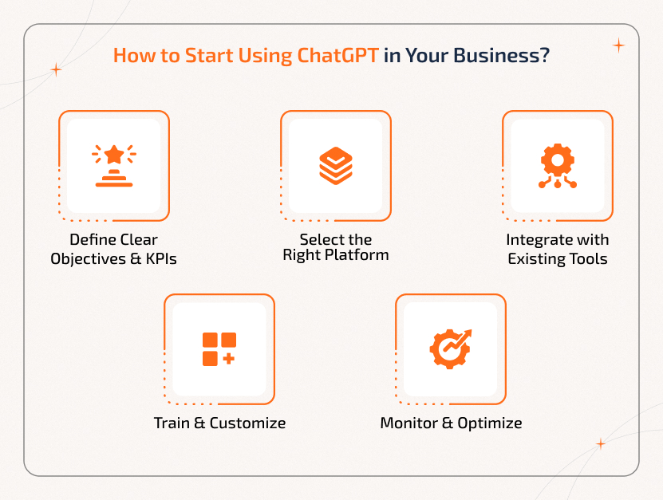
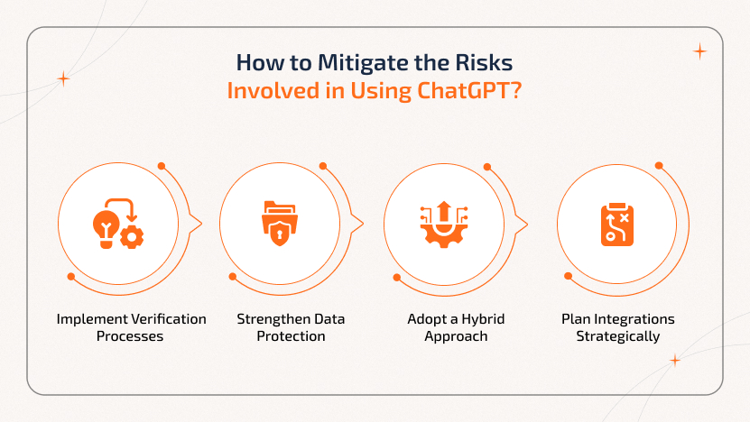

The rise of AI has moved beyond the tech sector and is now redefining how organizations operate. In fact, 75% of business leaders say AI will help them gain or sustain a competitive edge, according to Business Standard. Among these technologies, ChatGPT in business has emerged as a powerful option for automation, innovation, and efficiency. From streamlining workflows to delivering 24/7 customer service, organizations are turning to ChatGPT enterprise solutions to stay ahead in competitive markets. Whether it is about building an AI chatbot for business or harnessing generative AI in business for strategic growth, ChatGPT is setting new boundaries for speed, productivity, and customer engagement.
What is ChatGPT - All That You Need to Know
ChatGPT, by OpenAI, is an advanced conversational AI model that understands and generates human-like responses. From a business perspective, it goes beyond simple Q&A, helping companies automate repetitive tasks, enhance customer engagement, and support decision-making. Whether it is ChatGPT for business automation, internal operations, or digital transformation, it is seen as a must-have productivity tool in modern workplaces.
For businesses asking, "Is ChatGPT safe for business use?" the answer lies in adopting ChatGPT enterprise solutions, which offer encrypted data, controlled access, and effortless integration with existing tools.
Essential Business Functions ChatGPT Can Supercharge
In the digital era, AI tools for business are seen as growth accelerators rather than just efficiency boosters. With ChatGPT enterprise solutions, organizations can streamline complex processes and unlock new opportunities across domains.

1. Customer Support
ChatGPT offers 24/7 support, resolves FAQs instantly,
and manages live chat accurately without the need for human agents.
2. Marketing
It supports creating engaging content, ad copy, email
marketing, and personalized campaigns tailored to different types of audiences.
3. Sales Enablement
ChatGPT offers instant product details, supports
sales, and qualifies leads with real-time information.
4. HR Assistance
It automates candidate screening, onboarding tasks, and
employee query handling in real-time.
5. Data Processing
ChatGPT can effortlessly summarize complex reports,
speed up decision-making, and extract actionable insights.
6. Workflow Automation
It eliminates repetitive tasks with ChatGPT
productivity tools, freeing up teams to focus on high-priority work.
Automate key functions, boost productivity, and drive growth with tailored ChatGPT solutions.
How Companies Use ChatGPT Across Departments & Industries
ChatGPT in business is reshaping how companies operate, from automating repetitive tasks to delivering instant customer support. Through ChatGPT enterprise solutions, AI-powered business apps, or direct workflow automation, it is helping teams work faster, smarter, and more cost-efficiently.
Here’s how industries across different domains are unlocking value using ChatGPT:
Your marketing team can transform ideas into ready-to-launch campaigns in just minutes.
- Create ad copy, blog posts, email campaigns, and social media content tailored to your audience.
- Analyse customer behaviour and fine-tune your messaging using ChatGPT for marketing teams.
- Automate lead follow-ups and nurture prospects with personalized messages.
Imagine offering round-the-clock support without adding headcount.
- A ChatGPT business chatbot answers FAQs instantly with consistency.
- Supports multilingual queries without requiring additional staffing.
- Integrate ChatGPT for customer support to resolve tickets faster and deliver a better service experience.
From hiring to onboarding, HR tasks become easier with ChatGPT integration in business.
- Instantly draft job descriptions and role requirements.
- Offer structured interview questions by pre-screening candidates.
- With ChatGPT for internal operations, employee queries and onboarding guides can be created easily.
By using ChatGPT in business operations, it is possible to keep everyday tasks running smoothly.
- ChatGPT productivity tools can summarize reports, organize documents, and manage schedules.
- With ChatGPT workflow automation, routine admin tasks can be automated.
- It ensures smooth communication across teams.
With ChatGPT, handling big data is simpler, eliminating complications involved with manual processes.
- ChatGPT can pull insights from large datasets in just seconds.
- It can turn complex information into clear, actionable insights.
- It supports strategic decisions by offering AI-driven recommendations.
It is effortless to take your ideas from concept to reality faster by making use of ChatGPT in business.
- Research market trends and competitors continuously.
- Create product ideas and draft requirement documents.
- With generative AI in business, handling prototypes and testing concepts is made easier.
For those starting a business, ChatGPT can be your co-founder’s assistant.
- Build detailed business plans and pitch decks.
- Map out branding and go-to-market strategies in minimal time.
- It can answer questions like “Can ChatGPT help start a business?” with a positive approach.
ChatGPT is becoming an essential assistant in sectors where precision is key.
- Quickly analyse legal contracts to find issues and suggest potential fixes.
- Screen internal documents and communications to ensure regulatory compliance.
- Analyse vast databases of case law and statutes to find precedents.
The uses of ChatGPT in finance go beyond general reporting.
- Summarise complex financial reports and earnings calls to provide quick insights.
- Flag potential fraudulent activity by analysing unusual transaction patterns.
- Provide customers with customized guidance on budgeting and investment strategies.
ChatGPT works as a coding partner and brainstorming tool for technical teams.
- Generate boilerplate code, write tests, and find & fix bugs.
- Automatically create detailed documentation for code and APIs—a typically time-consuming task.
- Help security professionals analyse threat intelligence and draft incident response plans.
No matter which industry or department you belong to, there are always ways to make ChatGPT work for you. The more it is integrated into your processes, the more time, money, and resources you save, while growing your presence in the business world faster.
ChatGPT Business Integration - How to Connect It with Your Existing Tools
The best part of ChatGPT business integration is that it works hand-in-hand with existing tools. By connecting ChatGPT to your CRM, ERP, project management, and customer service platforms, you can transform them into smarter, faster, and more responsive systems.
Some of the most powerful integration examples include:
1. Slack – Provides instant answers to internal questions, shares updates, and keeps team knowledge highly accessible.
2. HubSpot/Salesforce – With ChatGPT, automate follow-ups, qualify leads, and personalize customer communications.
3. Asana/Trello – With ChatGPT workflow automation, you can create, assign, and update tasks automatically.
4. Email Marketing Platforms – Draft and send personalized campaigns that boost engagement.
By integrating ChatGPT into these existing platforms in your business, you are not only reducing manual workloads but also speeding up decision-making and delivering consistent, high-quality experiences to employees and customers.
Real-World ChatGPT Use Cases in Businesses Driving Impact
By using ChatGPT enterprise solutions, businesses across industries are unlocking real impacts, from reducing customer support costs to accelerating sales cycles. These generative AI in business use cases showcase how ChatGPT for digital transformation delivers measurable ROI and long-term growth.

1. E-Commerce & Retail
Integrating ChatGPT for customer support by a
fashion retailer reduces average ticket resolution time by 40% and improves
conversions via personalized product recommendations.
2. Finance & Banking
Deploying ChatGPT enterprise solutions in a
mid-sized bank can answer investment-related questions, improve client satisfaction,
and cut down staffing and operational costs.
3. Healthcare
A clinic using an AI-powered business app can schedule
appointments, provide basic patient guidance, and send reminders. This frees up
staff for more critical care and support.
4. Education & E-Learning
An edtech platform adopting generative AI in
business can create instant tutoring assistance and boost learner engagement by up
to 25%.
5. Real Estate
A property agency using ChatGPT for
marketing teams can auto-generate property descriptions and respond to buyers’
questions while reducing listing-to-sale time.
Benefits Associated with Using ChatGPT in Business
In today's digitally evolving era, companies adopting ChatGPT for internal operations and customer support are achieving transformative results in terms of efficiency and ROI. The major advantages of using this essential tool are as follows:

1. Time Savings
ChatGPT is highly beneficial when it comes to automating
repetitive, low-value tasks such as answering FAQs, generating reports, and creating
emails. This allows teams to focus more on high-value tasks that drive business
growth.
2. Cost Efficiency
Since ChatGPT can handle routine tasks effortlessly,
the need for hiring additional staff reduces, which in turn lowers operational costs
without compromising the quality of the work.
3. Scalability
Whether you want to handle a small number or a large
volume, ChatGPT enterprise solutions scale effortlessly, maintain speed, and ensure
the most accurate delivery of results.
4. Customer Satisfaction
Using ChatGPT in business means you can provide
instant 24/7 support, which improves response times, consistency, and the overall
customer experience. This way, businesses achieve better retention and gain trust
among customers.
5. Innovation
ChatGPT not only provides instant support but also fuels
automation in business with AI, enabling new workflows, product ideas, and smarter
decision-making across various domains.
When integrated well, ChatGPT not only streamlines operational workflows faster but also makes businesses smarter, more customer-focused, and ready for the future of work.
How to Start Using ChatGPT in Your Business?
Integrating ChatGPT into your business needs a clear plan to maximize impact and ROI. By following a structured approach, companies can achieve smooth adoption, effective customization, and measurable results.

1. Step 1 – Define Clear Objectives & KPIs
ChatGPT business integration
starts with identifying the areas where it can be implemented to bring measurable
benefits. This may include goals such as automation, faster responses, or smarter
decision-making.
2. Step 2 – Select the Right Platform
By understanding your requirements,
you can proceed with selecting the right platform. Choose an OpenAI for business
plan or a ChatGPT enterprise solution that aligns with your goals, budget, and
security needs.
3. Step 3 – Integrate with Existing Tools
The next step is to connect
ChatGPT to your existing systems. A common approach is API-based integration, where
ChatGPT connects directly to platforms like CRMs, ticketing systems, or AI-powered
business apps. This ensures data flows smoothly between platforms, reducing manual
work and improving collaboration.
4. Step 4 – Train & Customize
Feed ChatGPT with relevant company data,
FAQs, and workflows so it delivers context-aware, accurate, and brand-consistent
responses. It is essential to regularly update its training data to reflect new
policies, products, and customer needs.
5. Step 5 – Monitor & Optimize
Continuously track performance metrics
such as response time, cost savings, and customer satisfaction to fine-tune the
system for better results. Insights from these metrics can help identify new
opportunities for automation and efficiency gains.
ChatGPT Journey Today
Unlock automation, smarter decisions, and higher ROI with our end-to-end ChatGPT integration services.
Limitations and Risks to Consider While Using ChatGPT in Business
Although ChatGPT integration offers transformative advantages, it is important to understand its limitations and the extent of its capabilities.
1. Accuracy Limitations
Responses are only as reliable as the training
data provided. Fact-checking remains essential for critical or high-stakes tasks.
2. Data Privacy Concerns
When handling sensitive information, ensure
protection through secure ChatGPT enterprise solutions and strict compliance
measures.
3. Risk of Overreliance
To maintain balanced decision-making and prevent
costly errors, human oversight should always be part of the process.
4. Integration Challenges
Large-scale ChatGPT
business integration often requires specialized IT expertise and continuous
maintenance to ensure smooth performance.
How to Mitigate the Risks Involved in Using ChatGPT?
While the above challenges are real, they can be addressed effectively with the right strategies. This way, businesses can avoid potential downsides and maximize the value of ChatGPT enterprise solutions.

1. Implement Verification Processes
Include review checkpoints so
AI-generated outputs are validated by human agents before being used in
decision-making.
2. Strengthen Data Protection
Protect sensitive business data through
encryption, role-based access, and secure hosting environments.
3. Adopt a Hybrid Approach
For compliance-heavy or high-stakes
operations, combine ChatGPT automation with human judgment to ensure accuracy and
accountability.
4. Plan Integrations Strategically
Start small with
minimal integrations, then scale gradually with involvement from IT and security
teams at every stage to reduce complexities.
Why Choose Sparkout as Your ChatGPT Development Company?
Sparkout stands out as a trusted partner for building and integrating ChatGPT enterprise solutions that deliver measurable business impact. Here’s why leading organizations choose us:
- Proven AI Expertise – We specialize in AI chatbot development, integration, and customization tailored to business needs.
- Goal-Driven Strategies – Our ChatGPT integration plans are designed to align with your goals, workflows, and industry standards.
- Compliance-Ready Solutions – We build ChatGPT systems that meet industry compliance protocols to keep sensitive business data secure.
- Seamless Integrations – Our AI developers integrate ChatGPT effortlessly into CRMs, ticketing systems, and AI-powered business apps.
- Scalable Architecture – We design solutions that grow with your business without compromising quality or performance.
- End-to-End Support – From concept to deployment, we provide ongoing optimization for continuous value.
By partnering with Sparkout, you’re not just integrating ChatGPT into your business—you’re transforming it into a high-performing, valuable asset in your digital ecosystem.
Business with ChatGPT?
Partner with Sparkout to deploy secure, scalable & ROI-driven ChatGPT solutions that deliver real business impact.
The Future of ChatGPT in Business – What Lies in 2025 and Beyond
The future of ChatGPT in business integration is set for deeper adoption, where generative AI evolves into a central hub for operations, analytics, and customer support. In the coming years, ChatGPT enterprise solutions will become an essential part of daily business workflows.
AI will grow more personalized, context-aware, and industry-specific, enabling businesses to deliver smarter, faster, and more tailored experiences. Here’s what lies ahead:
- Deeper AI integration in companies for end-to-end automation.
- Voice-enabled AI chatbots for hands-free business interactions.
- Advanced analytics and predictive recommendations to guide strategic decisions.
Whether it’s about intelligent ChatGPT business assistants or fully automated workflow managers, the future is bright and rapidly expanding. Businesses that embrace this evolution will lead their industries with innovation, efficiency, and stronger customer retention.